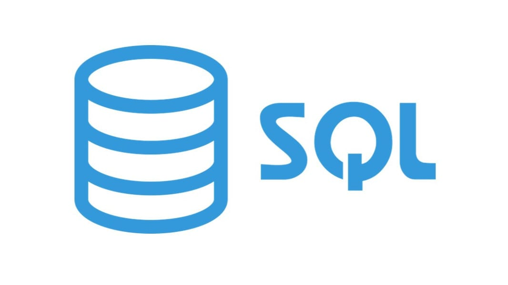
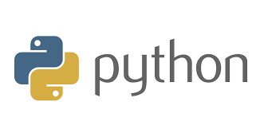

Thank you for completing the survery, !
Below is the result. Hope it can help your career build in the future. :)
If you can focus on learning for a long term, I would recommend you to study more than one language. From the survery, it would be great to study , however, the other two languages are promising too. Read the information of the languages, and consider what are the best for you.
Learn SQL
Not everybody is working in an environment that they can use a data warehousefor analysis, so if you are you find yourself repeatedly exporting lists from marketing or e-commerce or applications asking IT, a DBA, or engineers to get data out of a database or data warehouse for your analysis, hurry up and learn SQL!
I recommend Duke's SQL class on Coursera to go from zero to usable SQL skill in a less than two months. With that class and a couple books about PostgreSQL, you can learn enough to record this this demo with ad network data https://www.youtube.com/watch?v=FvVzxUffrlw.
Learn Python
It is straightforward to learn and provides a great foundation for learning ANY programmig language. You can use it to access and interact with API's which can substantially increase the scale of your marketing activities For instance, Facebook has an API for Facebook ads what allows you to create and manage campaigns programmatically.
But you will find that you have to learn more than just the basics to do anything that interesting. Python runs on your computer or a server, so you have to learn how to run the code on top of how to write the code.
If you are ready to set your mind to it and head down that path, I recommend starting with Udacity's Introduction to Python Programming, it is perfect for digital marketers because it introduces the concept of, and teaches you to build a very simple web crawler. After that, Coursera's Data Manipulation at Scale: System and Algorithms shows you how to do Tweet by accessing the Twitter API with Python.
When you want to try some practical stuff, check out Automate the Boring Stuff for interesting projects you can do on your computer, or Python Anywhere or AWS Lambra to get started running Python in the cloud!
The quickest way to apply Python toward digital marketing is to use JuPyteR for data analysis, but that still has a bit of a learning curve so beware. Python for Data Analysis is a great way to get started in that direction.
Learn Javascript

While Javascript can be used to make a lot of interesting web apps, it can also be useful within a few weeks if you want to set up or enhance Google Analytics on a website
Most CMS's make it pretty easy to edit at least some Javascript code, and Google Tag Manager makes it possible to insert Javascript code for tracking. Javascript is also how A/B testing tools like Optimizely and Google Optimize change the layout of a webpage. If you run a Google Ads account, you can even use Javascript to update and maintain your ads programmatically. Did you know Google Apps Script uses Javascript?
Just because it might be easier to start seeing the benefits of learning to code with Javascript does not mean it is an easier language to learn in general. Between callbacks, Javascript's version of Object Oriented Programming, and the zillions of libraries, versions, and frameworks, there can be some rough patches, but sticking with it will help you understand how the browsers and the web work. That will completely change your world!